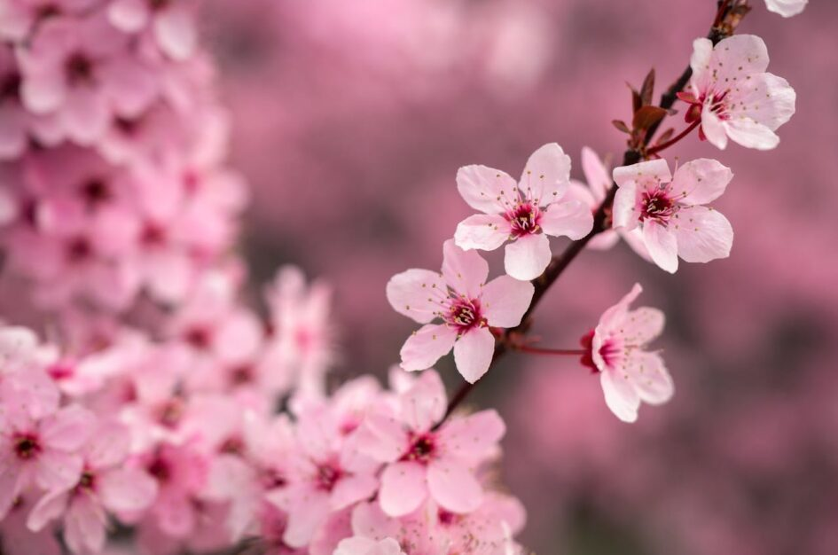

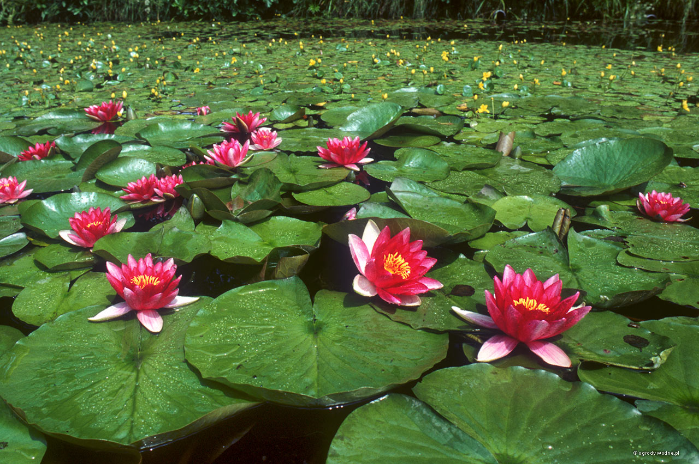
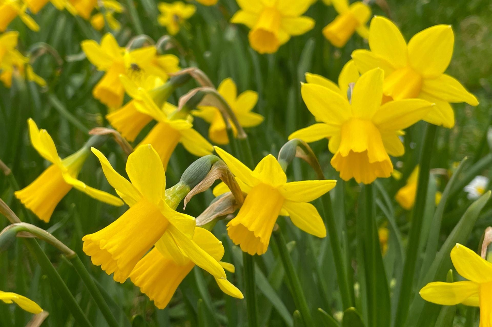
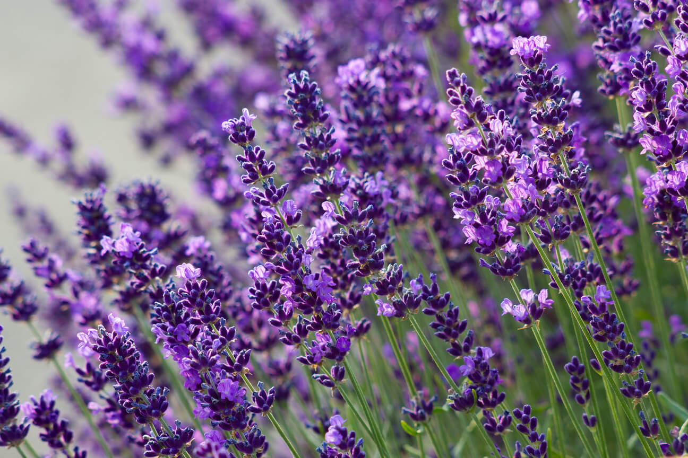
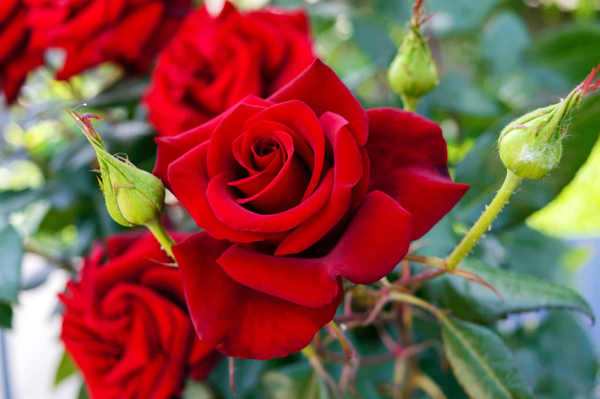
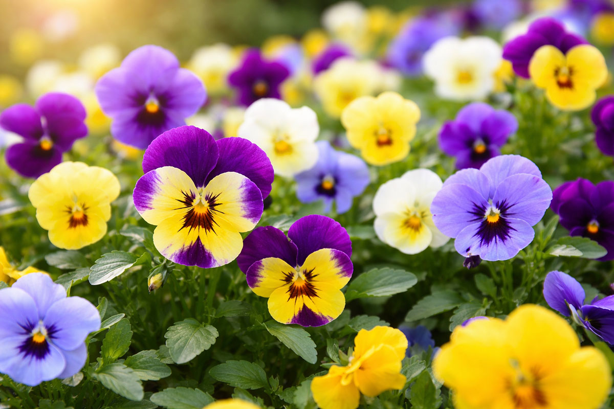
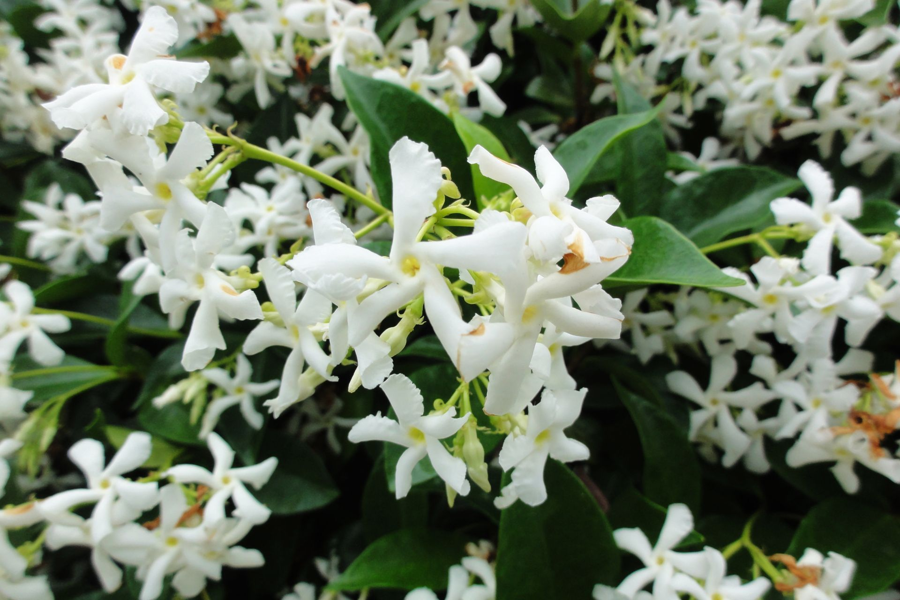







Kwiaty rozwijają się z pączków kwiatowych, zwykle jako pędy boczne w pachwinie przysadek (liści przykwiatowych, wspierających). Rzadko kwiat rozwija się na szczycie pędu. Rośliny o takim usytuowaniu tych organów nazywane są jednoosiowymi (haplokaulicznymi). Kwiat może być szypułkowy (umieszczony na różnej długości szypułce) lub siedzący (osadzony bezpośrednio na osi pędu). Kwiaty wyrastają zwykle w szczytowych, a więc najmłodszych częściach pędu, rzadko pojawiają się na wieloletnich fragmentach pędów (np. pniach i konarach drzew). Takie wyjątkowe usytuowanie kwiatów występuje u niektórych roślin tropikalnych i określane jest mianem kauliflorii. Pojedynczy kwiat zbudowany jest z liści płodnych i płonnych, nie związanych bezpośrednio z rozmnażaniem. Części płodne to pręciki z woreczkami pyłkowymi (mikrosporofile – organy męskie) oraz owocolistki z zalążkami (makrosporofile – organy żeńskie). Pręciki produkujące pyłek tworzą pręcikowie. Owocolistki tworzą słupek (słupkowie). Z liści płonnych (sterylnych) kwiatu zbudowany jest okwiat (okrywa kwiatowa), która u roślin nagonasiennych jest bardzo niepozorna, a niejednokrotnie nie występuje wcale, u roślin okrytozalążkowych zaś jest różnorodna i czasami bardzo okazała. Okwiat może być pojedynczy (listki okwiatu zebrane w jednym lub dwóch okółkach są niezróżnicowane) lub złożony i wtedy w jego skład wchodzi korona (corolla) oraz kielich (calyx), u niektórych roślin pod kielichem występuje kieliszek (epicalyx). Wszystkie elementy składowe kwiatu wyrastają z dna kwiatowego – rozszerzonej części będącej zakończeniem szypułki. W kwiatach owadopylnych występują dodatkowo gruczoły zwane miodnikami. W przypadku roślin nagonasiennych nieosłonięte zalążki leżą na pojedynczych owocolistkach. Zaś u roślin okrytonasiennych jeden lub kilka zrośniętych owocolistków tworzy słupek, w jego dolnej części tworzącej zalążnię zamknięte są zalążki.
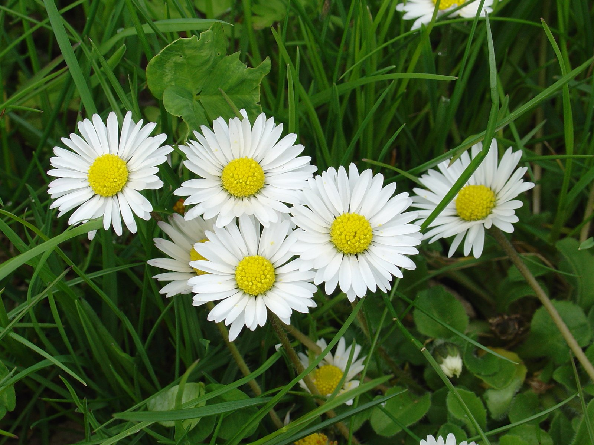
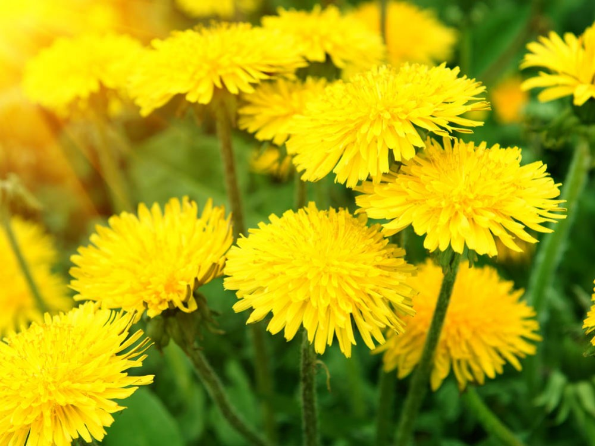
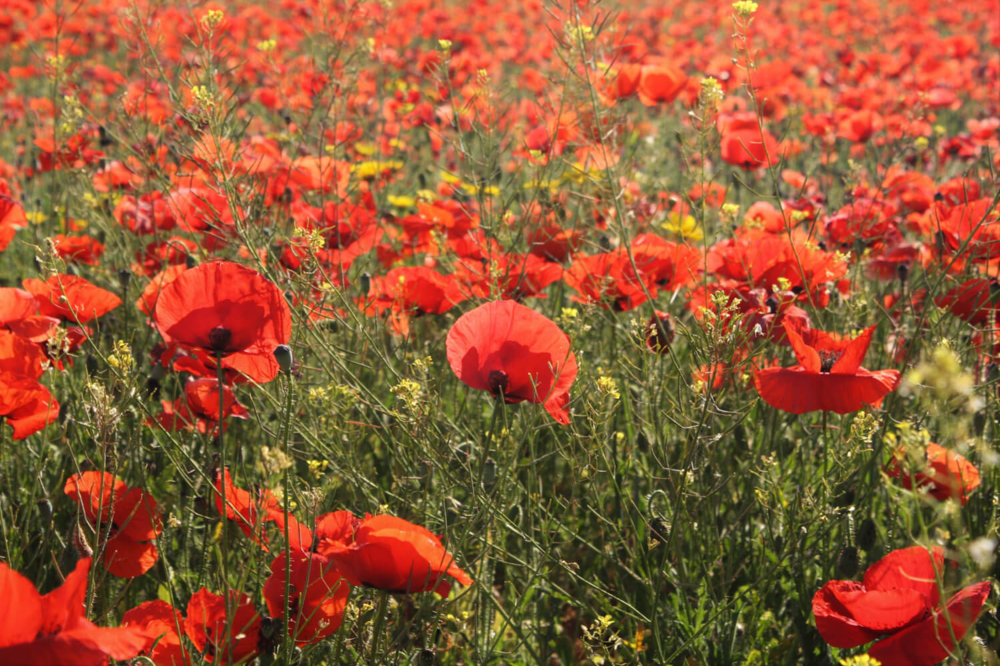
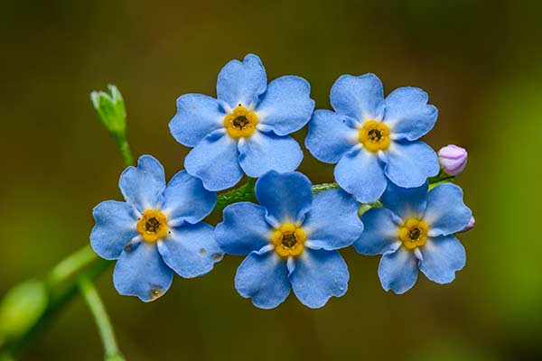
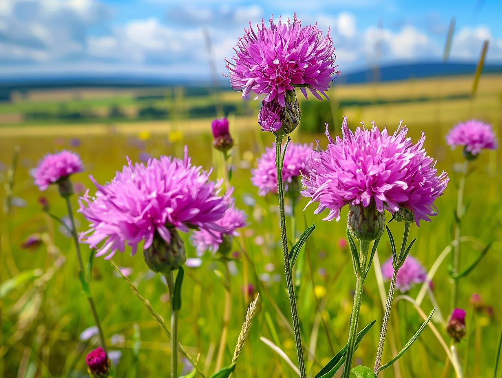

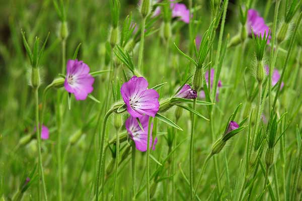